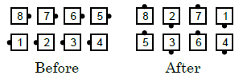
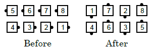

From columns: The #1 and #2 dancers Circulate 3 spots, working slightly wider than usual to give the centers room, and Face In (to become a Couple). Meanwhile, the #3 and #4 dancers Circulate and Arm Turn 3/4. From the momentary right-hand or left-hand 1/4 Tag, all Extend to form parallel waves.


Timing: 10